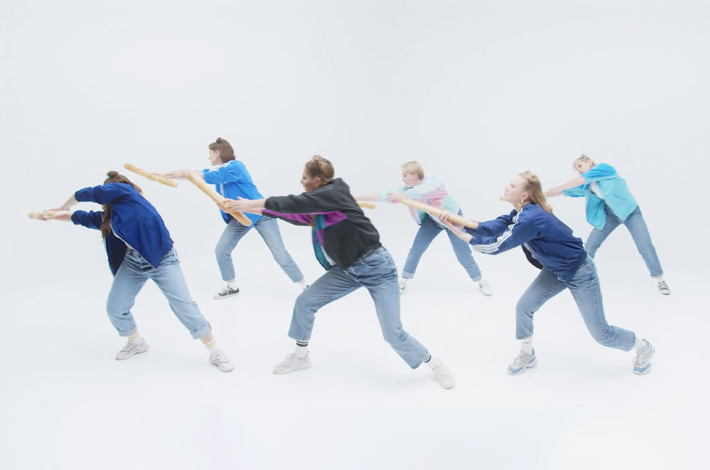
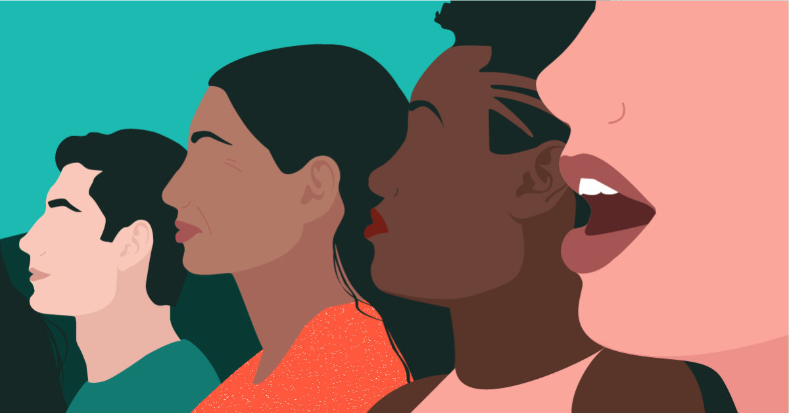

Credit: Photo by Matt Ragland
Our Experience with the Zoom University as University Freshmen.
We spent our entire freshman year of college completely online, and we will talk about the good and bad parts of our experiences in a podcast. Check it out here!.

Copyright: John Cairns 2015
My process of teaching dance to non-dancers
Life sucks without some dancing. The Indian Student Asociation performed at the International Street Fair and they were all non-dancers! This video. is my fun process, as the only dancer, of choreographing and teaching them the dance!

Credit: Getty Images/iStockphoto
Internet Media is a Bad Influence, but it doesn’t affect me!
The disease called The Third Person Effect is out there spreading fast! If you wanna know if you are suffering with it, check out my blog to find out!

Creator: Adobe PDF library 15.00
TW: SEXUAL ASSAULT
I am into poetry. I went through a sexual assualt recently and wrote one about it. After gathering a lot of courage I am able to shre this with you all. I respect everypne who faced it.